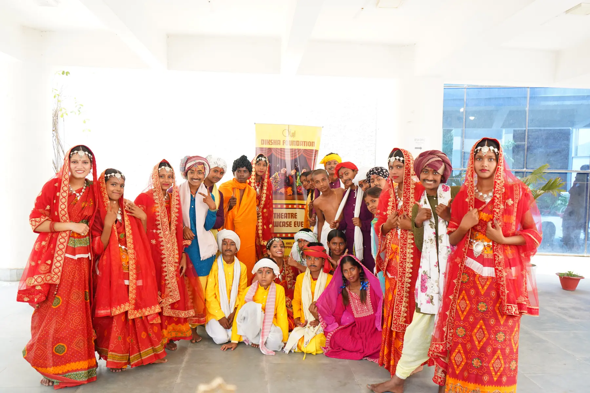
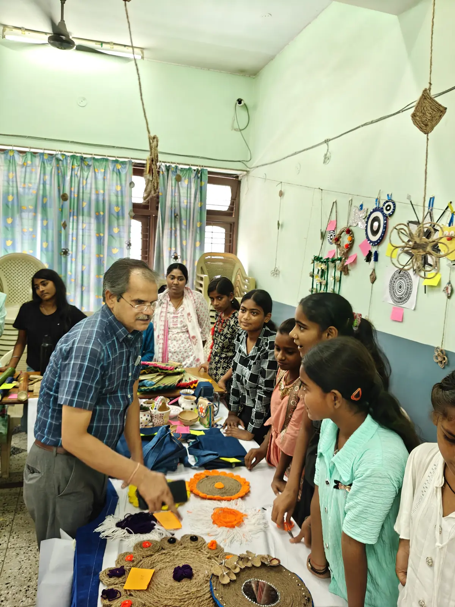
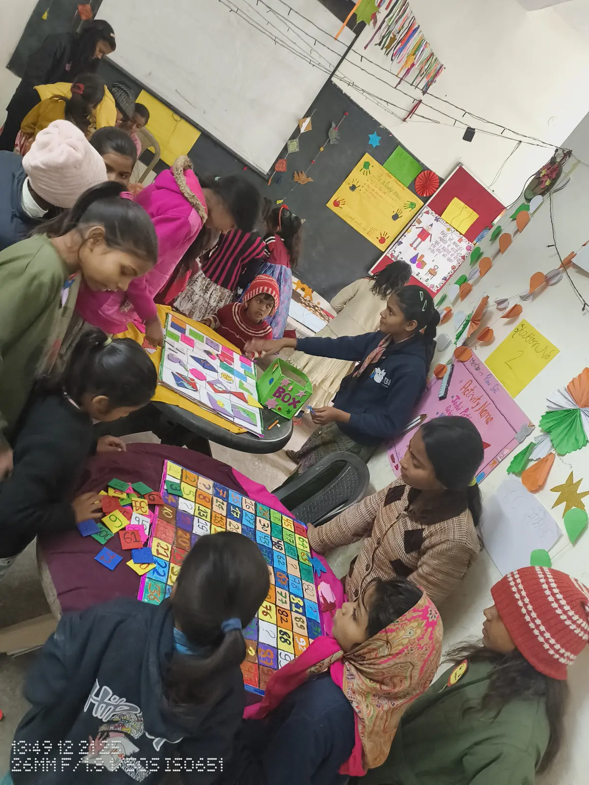
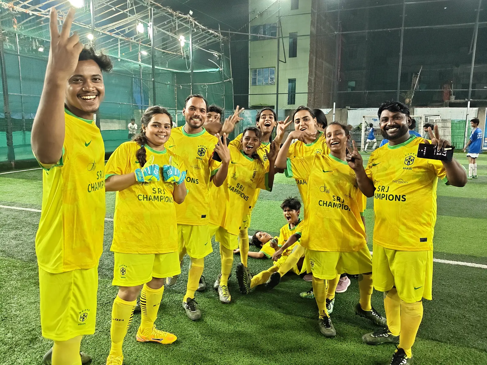

Learning is fun · Bihar · Since 2010
Circumstances do not decide how far a child can go.
At Diksha, children study. They also perform on stage, make art, build maths games, play competitive football and help run their centres. These should be ordinary opportunities in every childhood.

Theatre & dance
Mitti Se
Matrix Mela
Diksha Premier LeagueDiksha Foundation at a glance
01 · Why Diksha exists
For us, education has never meant marks alone.
Children need help with language, maths and school. They also need a place to speak, create, make decisions, work with others and be taken seriously.
KHEL is that place. We do not want a child’s circumstances to become their ceiling. So we stay for the long term and make room for study, art, performance, sport, technology, friendship and leadership.
- Freedom
- Joy
- Democracy
What we do
Each project has its own place, purpose and history.
Some projects grow around one centre. Others support girls and young women, build English confidence or take activity-based learning into schools.
See the project indexNeighbourhood learning centre
KHEL Patna
Diksha’s first long-term learning centre: academic support, books, computers, arts, sport, nutrition and a Bal Sansad under one roof.
Community learning centre
KHEL Bihta
A place for children and families in Bihta to learn together through study, creative work, sport and community participation.
Rural learning centre
KHEL Sarairanjan
A newer centre in Samastipur where the team is building regular, locally rooted learning with children and schools.
Girls and young women
Empowering Futures
Continued education, digital access and practical support for girls and young women as they plan what comes next.
English and exchange
English Access
English learning through conversation, theatre, film, public speaking and experiences beyond the classroom.
School and community partnerships
Learning beyond KHEL
Activity-based learning, civic education and teacher collaboration with government and community schools.
02 · What children experience
What happens at a KHEL centre?
The timetable includes school subjects, but it does not stop there. Children use what they learn in projects, performances, conversations, sport and the everyday work of sharing a centre.
Academic foundations
Reading, writing and maths—taught with patience and practice.
Social and emotional growth
Learning to understand oneself, listen and work through difficulty.
STEAM and digital agency
Making, questioning, coding and using technology with purpose.
Arts and expression
Music, theatre, dance and visual art—with work made for an audience.
Citizenship and leadership
Bal Sansad, shared decisions, rights and responsibility.
Health and wellbeing
Food, movement, sport, safety and care for the living world.
What children achieve
Achievement has many forms.
A test score is useful, but it cannot show everything a child can do. These events make learning public: children create the work, practise it, explain it and share it with other people.
Theatre & dance
Children take the stage.
They rehearse together, perform for an audience and learn what it feels like to hold a stage with confidence.
Mitti Se
Children become artists and hosts.
They made the work, arranged the arts-and-crafts exhibition and explained it to visitors.
Matrix Mela
Children make maths worth sharing.
They designed maths games, set up the mela and taught families and visitors how to play.
Diksha Premier League
Football is played to compete—and to belong.
Teams trained, played a full tournament and celebrated what they had built together on the pitch.

Long-term presence
We stay long enough to know each other.
Diksha does not enter a community for a short project and disappear.
Educators know the children and their families. Children grow up with the centre, take responsibility in Bal Sansad and, in some cases, return as educators and mentors. That continuity is part of the work, not a side effect of it.
Partner with DikshaBadi Maa · 1956–2019
She gave Diksha nine full-time years.
From 2010 to 2019, Badi Maa volunteered full time with Diksha.
She was not a distant supporter. She was present at the centre, with children and educators, through Diksha’s first nine years.
Children remember her care, simplicity and joy. She helped shape a culture in which every child is taken seriously, learning feels warm and adults keep showing up.
Read the Diksha storyReports and governance
See the records behind the work.
Read Diksha’s annual reports, audited financial statements, FCRA returns and programme resources.
View reportsVisit, learn or collaborate
Come and see a KHEL centre.
Meet the team, understand a project or speak with us about supporting long-term learning in Bihar.
Start a conversationSupport joyful learning